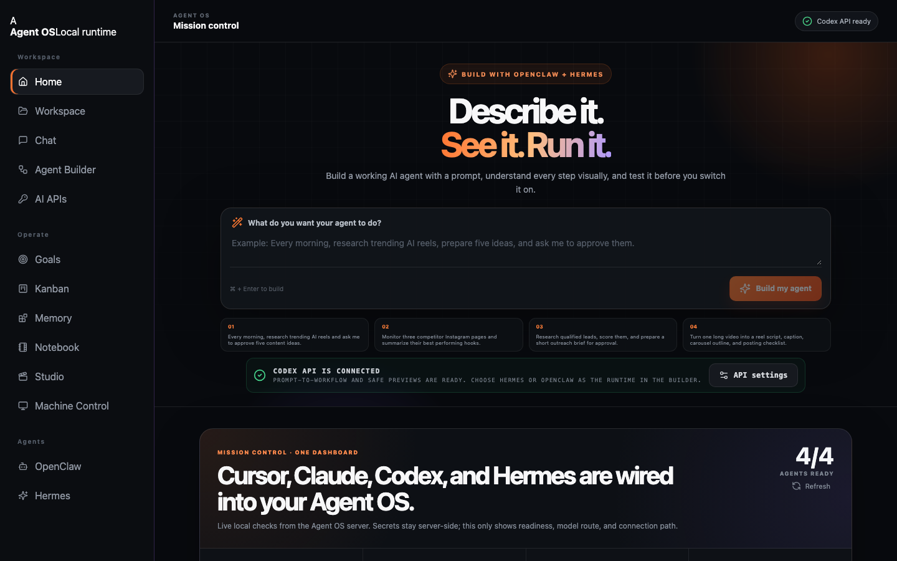
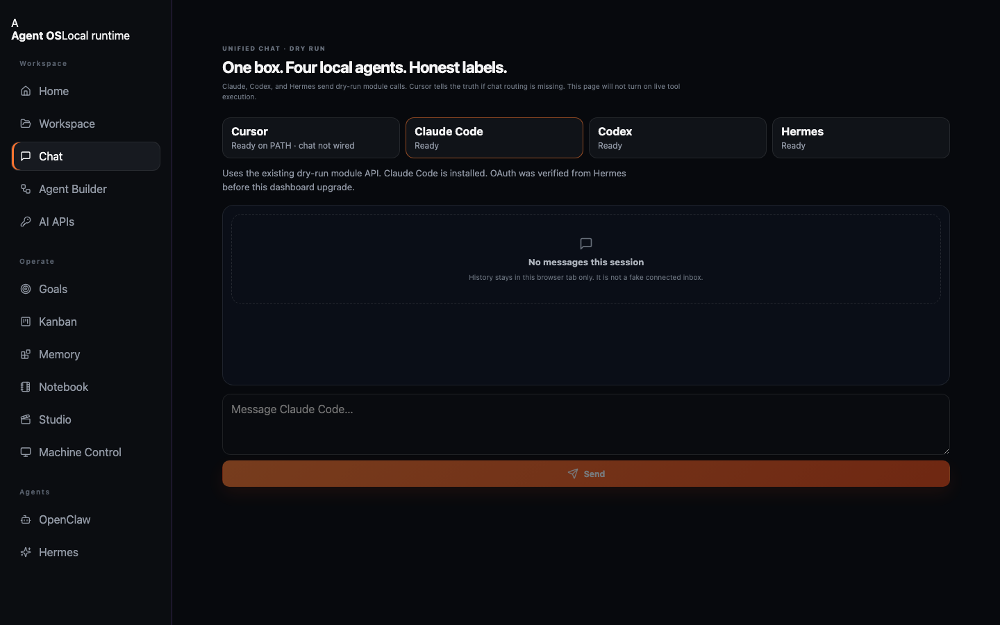
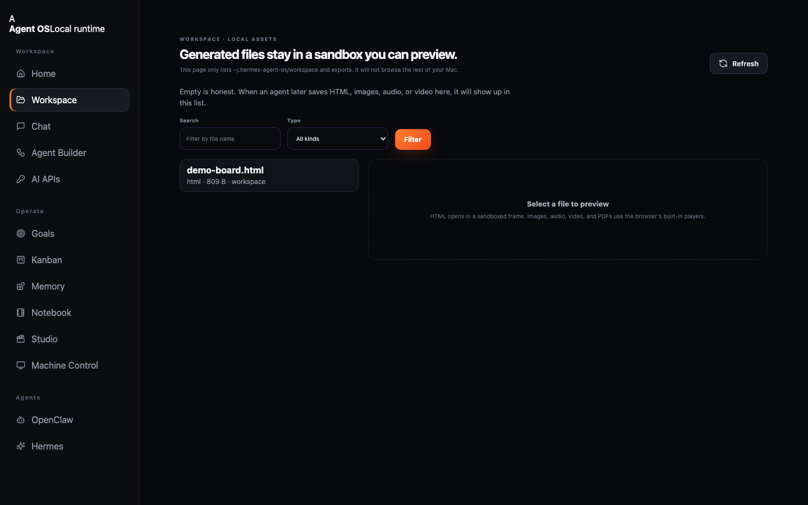
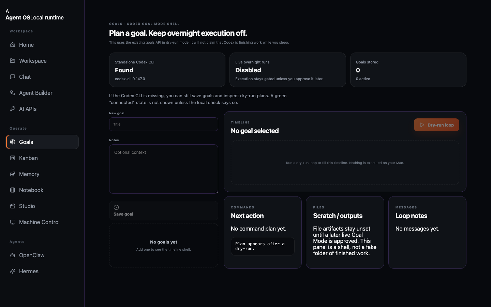
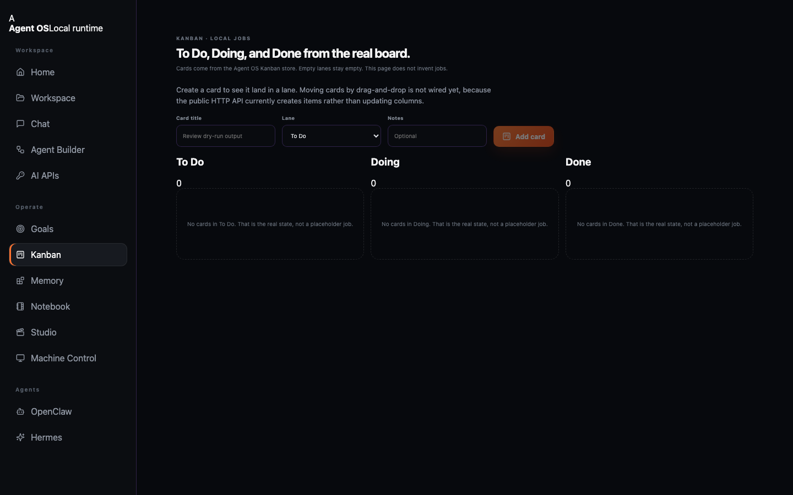
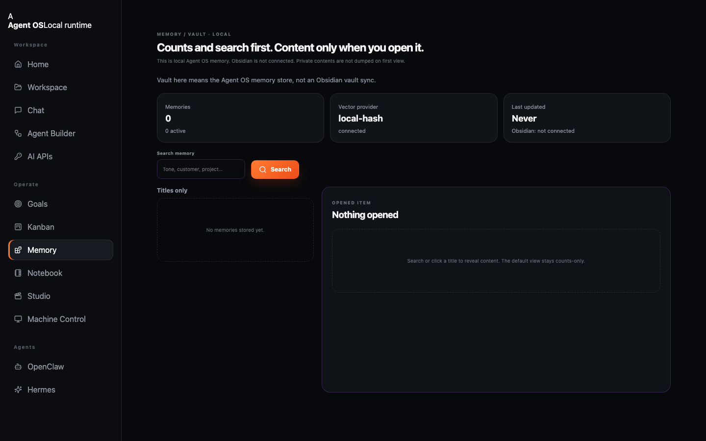
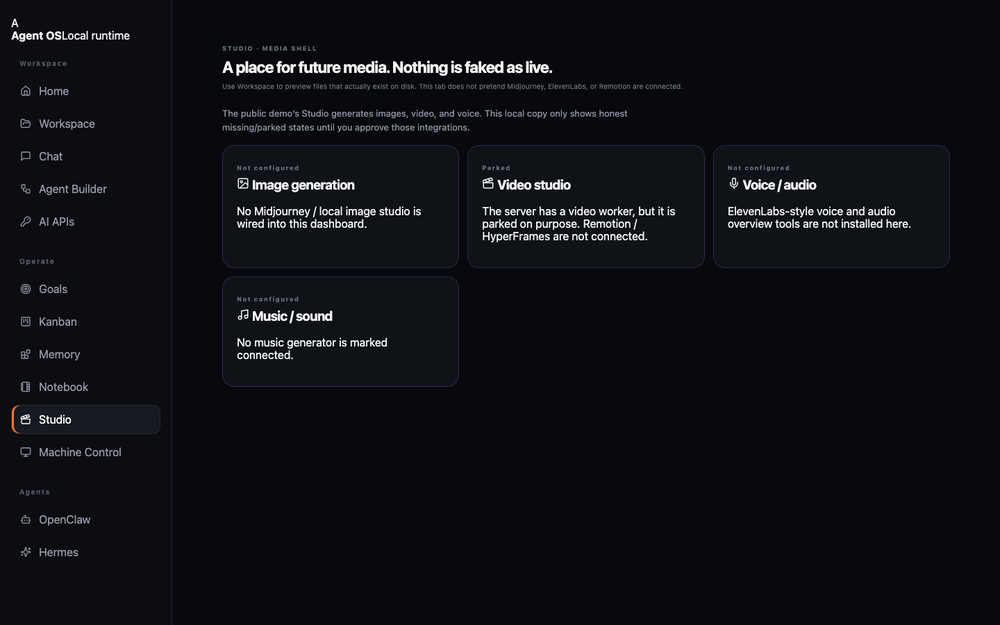
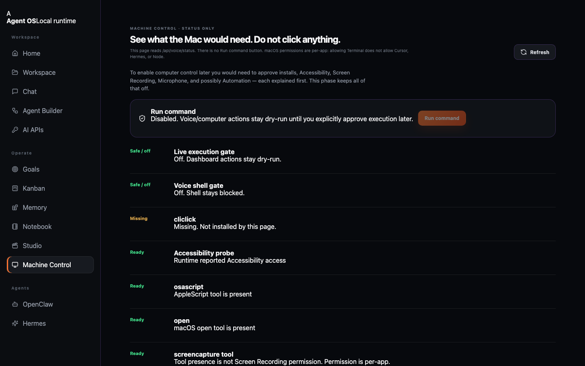

AGENT OS · LOCAL RUNTIME
Click through the product.
Recruiter walkthrough of a local-first agent dashboard. These are real screenshots from the running app —
dry-run chat, sandboxed workspace, and machine control with Run command disabled.
Home
Chat
Workspace
Goals
Kanban
Memory
Studio
Machine

Home — prompt-to-workflow plus live local checks for Cursor, Claude, Codex, and Hermes.

Unified Chat — one box, four agents, dry-run labels. Cursor is honest when chat is not wired.

Workspace — only the Agent OS sandbox. HTML preview uses a sandboxed iframe.

Goals — Codex Goal Mode shell. Overnight execution is not claimed while the gate is off.

Kanban — To Do / Doing / Done from the real local board API.

Memory — counts and search first. Content only after you open an item. Obsidian is not connected.

Studio — parked / not configured. No fake Midjourney or ElevenLabs.

Machine Control — status checklist. Run command stays disabled.